Tipo de Cálculo de Peso
Ubique y seleccione en el menú de ADempiere, la carpeta “Gestión de Asistencia al Agricultor”, luego seleccione la carpeta “Configuración de Materia Prima”, por último seleccione la ventana “Tipo de Cálculo de Peso”.
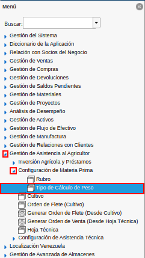
Imagen 1. Menú de ADempiere
Podrá visualizar la ventana “Tipo de Cálculo de Peso”, con los diferentes registros de cálculo de peso.
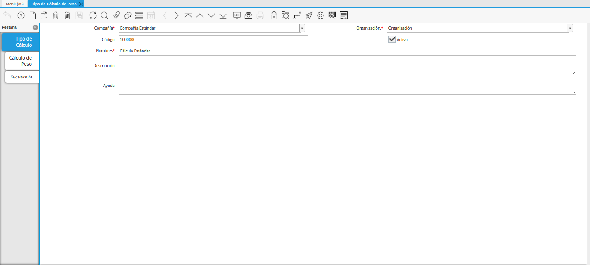
Imagen 2. Ventana Tipo de Cálculo de Peso
Seleccione el icono “Registro Nuevo”, ubicado en la barra de herramientas de ADempiere.
Imagen 3. Icono Registro Nuevo
Seleccione en el campo “Organización”, la organización para la cual se encuentra realizando el registro.
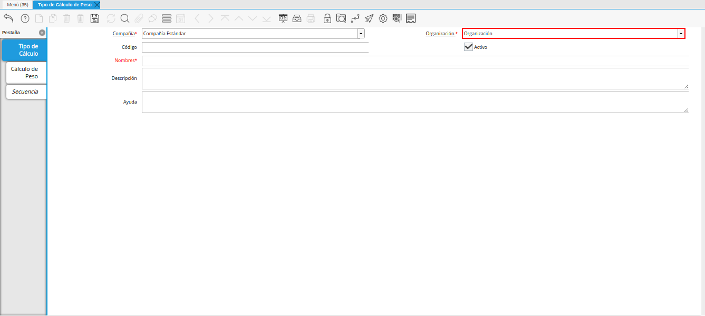
Imagen 4. Campo Organización
Introduzca en el campo “Código”, el código para el registro que se encuentra realizando.
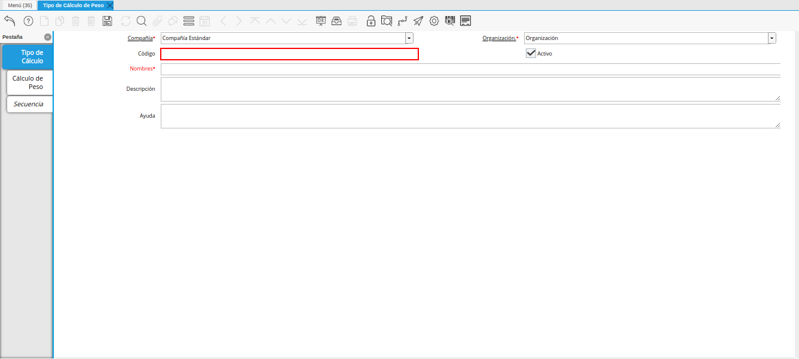
Imagen 5. Campo Código
Introduzca en el campo “Nombre”, el nombre correspondiente al tipo de cálculo de peso que se encuentra registrando.
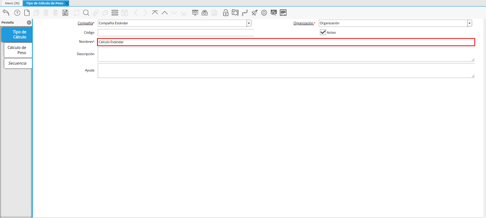
Imagen 6. Campo Nombre
Introduzca en el campo “Descripción”, una breve descripción referente al registro que se encuentra realizando.
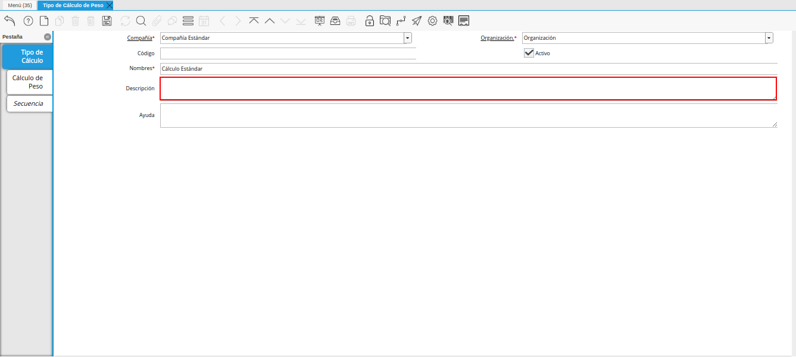
Imagen 7. Campo Descripción
Seleccione el icono “Guardar Cambios”, ubicado en la barra de herramientas de ADempiere.
Imagen 8. Icono Guardar Cambios
Seleccione la pestaña “Cálculo de Peso” y proceda al llenado de los campos.
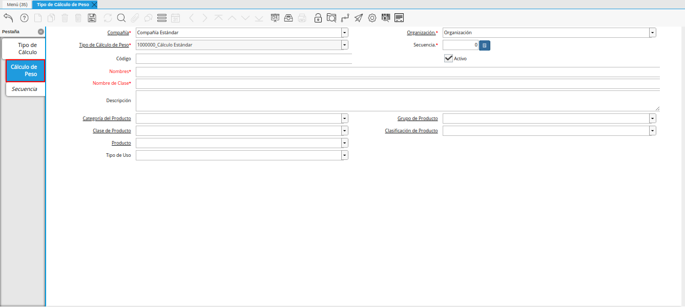
Imagen 9. Pestaña Cálculo de Peso
Introduzca en el campo “Código”, el código correspondiente al registro que se encuentra realizando.
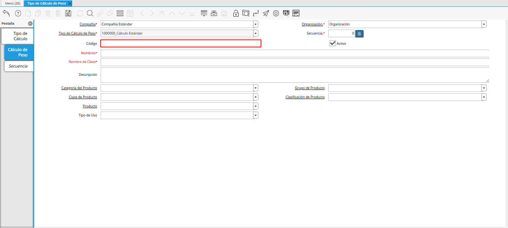
Imagen 10. Campo Código
Note
El código para el registro en el formato requerido; debe ser único. Un código le permite a usted un método rápido de encontrar un registro en particular.
Seleccione en el campo “Secuencia”, la secuencia correspondiente al registro que se encuentra realizando.
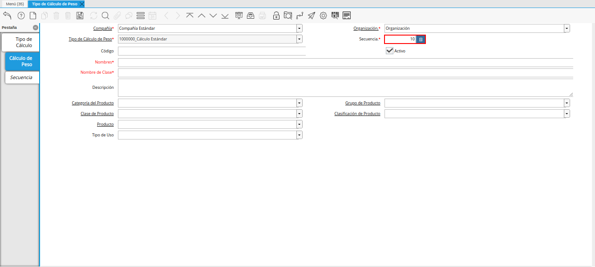
Imagen 11. Campo Secuencia
Introduzca en el campo “Nombre”, el nombre correspondiente al registro que se encuentra realizando.
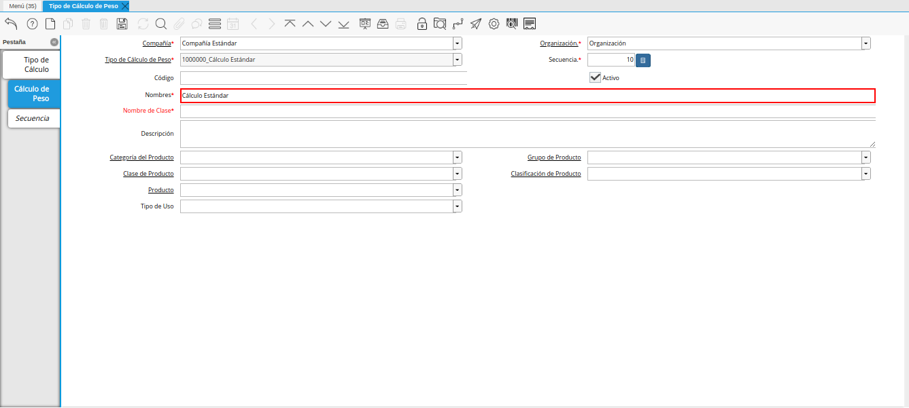
Imagen 12. Campo Nombre
Introduzca en el campo “Nombre de Clase”, el nombre clase correspondiente al registro que se encuentra realizando.
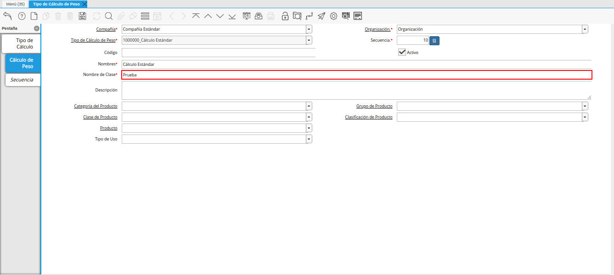
Imagen 13. Campo Nombre de Clase
Note
El nombre de clase identifica el nombre de la clase Java usada por este proceso.
Introduzca en el campo “Descripción”, una breve descripción correspondiente al registro que se encuentra realizando.
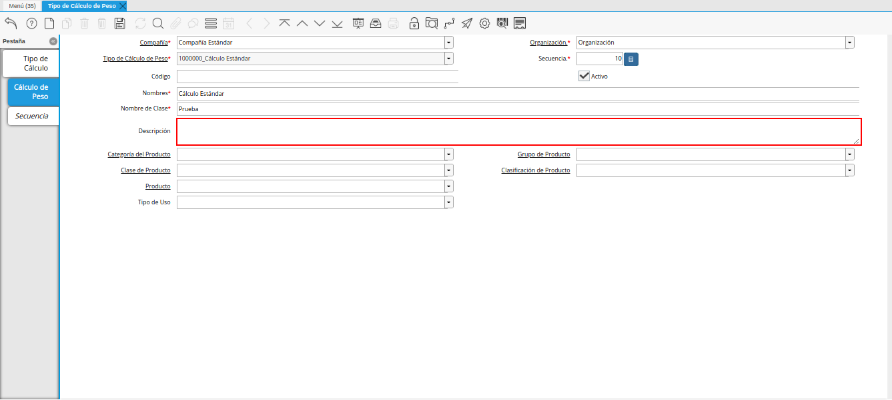
Imagen 14. Campo Descripción
Seleccione en el campo “Categoría del Producto”, la categoría del producto a la cual pertenece el registro que se encuentra realizando.
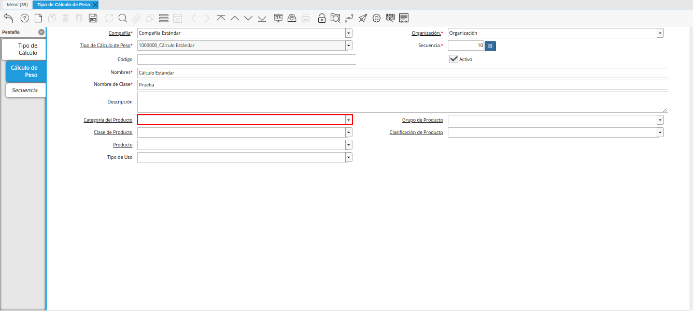
Imagen 15. Campo Categoría del Producto
Seleccione en el campo “Grupo de Producto”, el grupo de producto al cual pertenece el registro que se encuentra realizando.
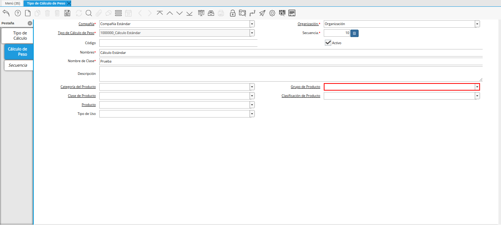
Imagen 16. Campo Grupo de Producto
Seleccione en el campo “Clase de Producto”, la clase de producto al cual pertenece el registro que se encuentra realizando.
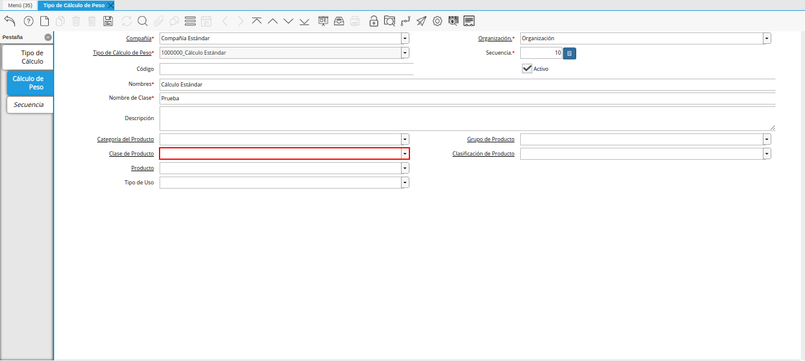
Imagen 17. Campo Clase de Producto
Seleccione en el campo “Clasificación de Producto”, la clasificación de producto correspondiente al registro que se encuentra realizando.
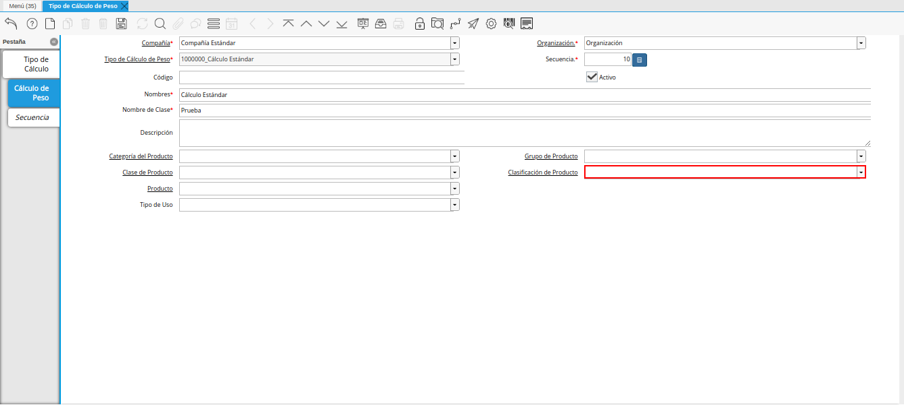
Imagen 18. Campo Clasificación de Producto
Seleccione en el campo “Producto”, el producto correspondiente al registro que se encuentra realizando.
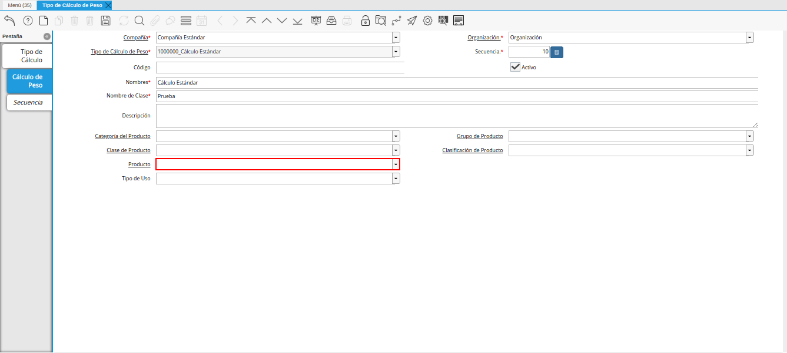
Imagen 19. Campo Producto
Seleccione en el campo “Tipo de Uso”, el tipo de uso para el cálculo de peso correspondiente al registro que se encuentra realizando.
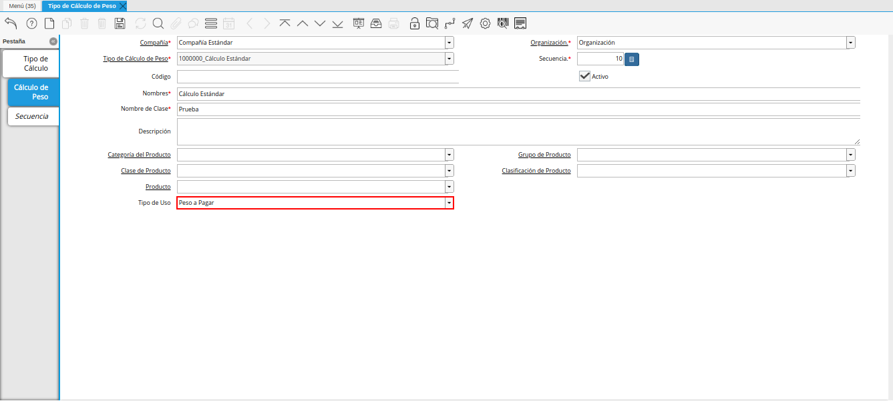
Imagen 20. Campo Tipo de Uso
Seleccione el icono “Guardar Cambios” en la barra de herramientas de ADempiere.
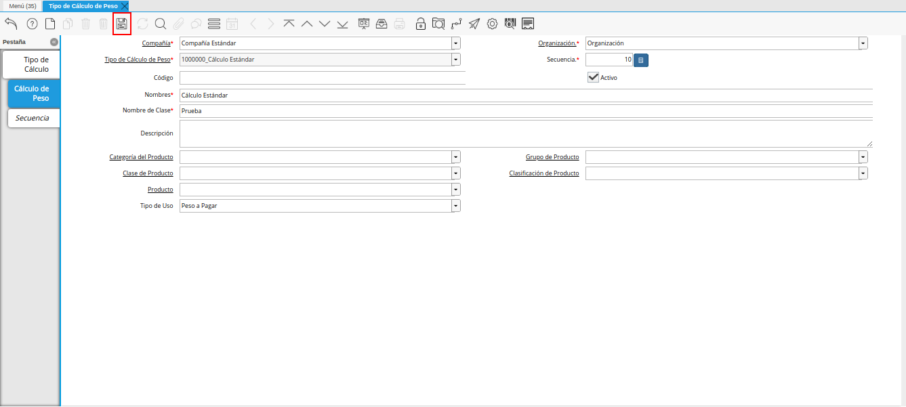
Imagen 21. Icono Guardar Cambios